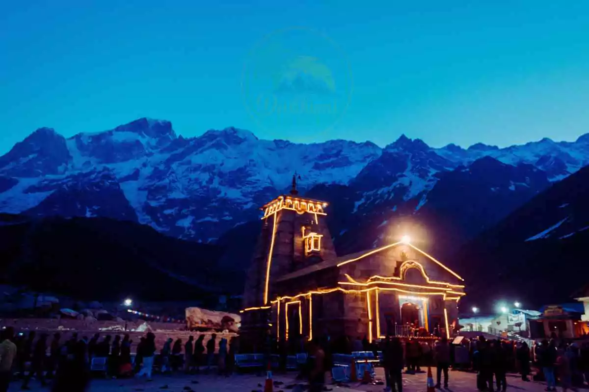

The Kedarnath Tungnath Rishikesh Tour Package: Embark on a Spiritual Journey
Embark on a transformative journey to Kedarnath Tungnath Rishikesh Tour Package
Embark on a soul-stirring journey with a Char Dham Yatra from the enchanting city of Dehradun, serving as the gateway to divine realms nestled in the majestic Himalayas.
This pilgrimage takes pilgrims through the sacred shrines of Yamunotri, Gangotri, Kedarnath, and Badrinath, each holding profound spiritual significance in Hinduism.
The Char Dham Yatra refers to the pilgrimage to the four sacred shrines of Yamunotri, Gangotri, Kedarnath, and Badrinath in the Indian state of Uttarakhand.
These shrines are highly revered by Hindus and are located in the Garhwal region of the Himalayas.
Embarking on the Kedarnath Yatra Package is not just a pilgrimage; it's a profound spiritual journey that takes you through breathtaking landscapes, ancient temples, and the majestic Himalayas. Nestled in the Rudraprayag district of Uttarakhand, India, Kedarnath holds immense significance in Hindu mythology and draws thousands of devotees each year seeking blessings and enlightenment.
Kedarnath Tungnath Rishikesh Tour Package from Haridwar Discover
Divine Tranquility: 06-Day
Discovering Kedarnath Tungnath Rishikesh Tour Package:
The journey to Kedarnath begins with reverence and anticipation.
Pilgrims usually start from the town of Gaurikund, the base camp
for the trek, which is easily accessible by road from Rishikesh
and Haridwar. As you embark on the trek, you’re greeted by the
pristine beauty of the Himalayan ranges, lush green valleys, and
the soothing melody of gurgling streams, offering a serene
backdrop for introspection and devotion.
Spiritual Significance:
Kedarnath is one of the twelve Jyotirlingas, revered as the ‘Lord
of Kedar Khand,’ and holds immense spiritual significance in
Hinduism. According to legend, it is believed to be the place
where Lord Shiva absolved himself from the sin of killing the
demon, Vakasura. The temple, situated at an altitude of 3,583
meters (11,755 feet), stands as a testimony to faith and devotion
amidst the challenging terrains of the Himalayas.
The Trekking Experience:
The trek to Kedarnath is not just a physical journey but also a
test of one’s determination and devotion. Spanning over 16
kilometers, the route is adorned with picturesque landscapes,
dense forests, and cascading waterfalls. Along the way, pilgrims
encounter various stops such as Rambara, Garud Chatti, and Bhairav
Chatti, offering moments of rest and reflection amidst nature’s
grandeur.
Sacred Encounters:
As pilgrims approach the sacred shrine, a sense of reverence
envelops the atmosphere. The towering temple dedicated to Lord
Shiva stands as a symbol of faith, resilience, and spirituality.
The mesmerizing architecture, adorned with intricate carvings and
adorned with flags, evokes a sense of divinity and awe-inspiring
beauty. Devotees offer prayers, perform rituals, and seek
blessings, fostering a deep connection with the divine.
Embracing the Essence:
The
Kedarnath Yatra
is not merely about reaching the destination; it’s about embracing
the essence of spirituality, devotion, and self-discovery. The
tranquil ambiance of the Himalayas, the rhythmic chants of hymns,
and the camaraderie among fellow pilgrims create an atmosphere of
unity and harmony, transcending worldly boundaries and fostering a
sense of oneness with the cosmos.
Practical Tips for Pilgrims:
Physical Fitness: Ensure you are physically fit
to undertake the trek. Regular exercise and proper
acclimatization are essential for a smooth journey.
Pack Wisely: Carry essential items such as warm
clothing, comfortable trekking shoes, a first-aid kit, and ample
water to stay hydrated.
Respect Nature: Maintain the sanctity of the
environment by avoiding littering and preserving the natural
beauty of the Himalayas.
Plan Ahead: Check weather forecasts and plan
your journey accordingly. It’s advisable to undertake the yatra
during the pilgrimage season, typically from May to October.
Seek Guidance: Follow the instructions of local
guides and authorities for a safe and fulfilling journey.
Conclusion:
The Kedarnath Yatra is not just a pilgrimage; it’s a
transformative journey of the soul, offering moments of
introspection, devotion, and spiritual rejuvenation. Amidst the
awe-inspiring beauty of the Himalayas and the divine aura of the
temple, pilgrims embark on a quest for inner peace and
enlightenment, forging a deeper connection with the divine. With
every step taken amidst the rugged terrains and sacred shrines,
the yatra becomes an unforgettable odyssey of faith, resilience,
and transcendence.
05N/06D
01 NightsGuptkashi
01 NightsKedarnath
02 NightChopta
01 NightRishikesh
Top Tourist Attractions Covered Only With Devbhumi Tourism
Haridwar
Rishikesh
Uttarkashi
Kashi Vishwanath Temple
Similar Char Dham Yatra Options
*All the above tours including this tour are easily customisable, feel free to get in touch with us for any customisation.
Best Tour Route For 06 Days Kedarnath Tungnath Rishikesh Tour
HARIDWAR - GUPTKASHI

GUPTKASHI - GAURIKUND - KEDARNATH JI
KEDARNATH JI - SONPRAYAG - CHOPTA
CHOPTA - TUNGNATH - CHANDRASHILA - CHOPTA
CHOPTA - RISHIKESH
RISHIKESH - HARIDWAR
Trip Highlights
The Kedarnath Tungnath Rishikesh Tour Package from Haridwar offers a spiritual journey of six days, starting with reverence in Gaurikund. Pilgrims trek through lush valleys to reach Kedarnath, one of the twelve Jyotirlingas, where Lord Shiva absolved his sins. The trek, spanning 16 kilometers, promises picturesque landscapes and sacred encounters at the temple. Practical tips ensure a safe and fulfilling journey. Tentative shrine opening dates for 2024 are provided, and visitors can request tailored tour quotes through a form. Detailed itineraries and Tripadvisor reviews add to the package's appeal.
KEDARNATH TUNGNATH RISHIKESH YATRA TOUR ITINERARY
Day 1 HARIDWAR - GUPTKASHI (204 KM/08 HR)
Pick up from Haridwar in the morning and proceed straight to Guptkashi via covering Rishikesh, Byasi, Devprayag, Srinagar, Rudraprayag, and Agastmuni hill stations on the way. Lunch midway. The evening arrives, get check-in into the hotel. Evening free for your leisure. Dinner and overnight stay at Guptkashi.
Day 2 GUPTKASHI - GAURIKUND - KEDARNATH JI
Wake up early and get refreshed. There are two mediums to reach the Kedarnath temple i.e. by road and by air. Please find the below details for both mediums.
By Road: If you are planning to reach the Kedarnath temple by road then your cab will take you to Sonprayag. In the high season (May/June) there is much rush on this road from Guptkashi to Sonprayag which has a distance of 30 km. Sometimes this distance takes more than 03 hours to reach Sonprayag. So, leaving early from Guptkashi for Sonprayag will be a good idea. From the Sonprayag you will need to take local conveyance for Gaurikund, which is 05 km ahead of Sonprayag. Gaurikund is the base camp for Kedarnath trek. You will do medical and biometric registration here and then proceeds for the trek to Kedarnath. It is a 16 km trek which takes around 5 hours to complete the trek for a normal person. You will also have other options like Dolly/Ponny if you wish to skip the trekking.
By Air: You can also choose to explore Kedarnath by Helicopter services. Helicopter services are time-saving and give you an amazing bird-eye view of the snow-clad Himalayan peaks behind the Kedarnath temple. If you choose to access the Kedarnath temple by Heli services then the cab will take you to Helipad from where you will do all the formalities and will take off for the Kedarnath. Once you reach Kedarnath, get check-in into the hotel. Take some rest and explore surroundings on your own. Having dinner and overnight stay at Kedarnath.
Day 3KEDARNATH JI - SONPRAYAG - CHOPTA
Wake up early, get refreshed. Do the necessary shopping for the pooja at Kedarnath temple. You can book a special pooja on additional charges. After having the Darshan of Lord Kedarthan and pooja ceremony back to the hotel. Pack your luggage and check out. Post check out have your breakfast at Kedarnath. Post breakfast treks down/fly down to Sonprayag/Guptkashi. From Sonpryag/Guptkashi board the cab and proceed straight to Chopta. Chopta is about 75 km from Sonprayag which will take approx. 4 hours to reach Chopta. Lunch midway. The evening arrives, get check-in into the camps. The evening explores a beautiful sunset and enjoys bonfires with light music at the camps. Dinner and overnight stay at Chopta.
Day 4CHOPTA - TUNGNATH - CHANDRASHILA - CHOPTA
A Cozy morning. Wake up, get refreshed and refuel yourself with a heavy breakfast. Post breakfast, relax for a while and pack a bag full of Biscuits, Namkeens, Dryfruits, Water bottles, and whatever you like to eat and drink during the trek. Board the cab and get transferred to the trek base. Tungnath is located at the elevation of 2600 m above the sea level and it is awarded as the highest temple dedicated to Lord Shiva on the planet. There are no shops/stalls at the peak socarrying your own snacks is highly recommended. If you wish you can also go beyond Tungnath then you can also explore Chandrashila peak which is also known as Moon rock. Both peaks give you mesmerizing Himalayan views. Post exploration treks down to the base camp and board the cab to get transferred to the camps. The evening is free for your leisure. Having dinner and overnight stay at Chopta.
Day 5CHOPTA - RISHIKESH (203 KM/06 HR)
Refuel yourself with a heavy breakfast at the camp. Post breakfast checks out and proceeds to Rishikesh. En-route explores Makkumath, Ukhimath, Rudraprayag, Srinagar, and Devprayag. Lunch midway. The evening arrives, get check-in into the hotel and relax for an hour. The evening explores Rishikesh’s local market, Ram Jhula, and Laxman Jhula. You can also participate in the live Ganga aarti at Triveni Ghat at Rishikesh. Having dinner and overnight stay at Rishikesh.
Day 6RISHIKESH - HARIDWAR (30 KM/01 HR)
Rejuvenate yourself through Yoga at the bank of the holy Ganges at Rishikesh in the morning. Post breakfast checks out and proceeds to Haridwar and investigate Har Ki Pauri followed by Mansa Devi Temple, Bharat Mata Temple, and Chandi Devi Temple in Haridwar. Lunch during the sightseeing. The evening drops at Haridwar/Rishikesh railway station/airport. Tour ends.
Tour Map
More about this tour
Kedarnath
Kedarnath, nestled in the majestic Himalayas of Uttarakhand,
India, is a sacred pilgrimage site revered by millions of
devotees worldwide. Situated at an altitude of 3,583 meters
(11,755 feet), it holds profound significance in Hindu
mythology as one of the twelve Jyotirlingas and is dedicated
to Lord Shiva, the destroyer and transformer in the Hindu
trinity.
The journey to Kedarnath is not just a physical trek but a
spiritual odyssey, traversing through breathtaking landscapes,
dense forests, and pristine valleys. The highlight of the
pilgrimage is the ancient Kedarnath Temple, an architectural
marvel adorned with intricate carvings and vibrant flags,
where devotees seek blessings and absolution.
Despite its remote location and challenging terrain, pilgrims
flock to Kedarnath during the pilgrimage season, typically
from May to October, to pay homage to the divine and
experience a sense of spiritual rejuvenation amidst the
tranquil ambiance of the Himalayas. Kedarnath beckons seekers
of truth and enlightenment, offering solace, devotion, and a
profound connection with the eternal.
Here we have answered some frequently asked questions (FAQs)
about a Kedarnath Yatra from Haridwar:
1. What is the significance of Kedarnath in Hindu
mythology?
Kedarnath holds immense significance as one of the
twelve Jyotirlingas, representing the manifestation of
Lord Shiva. It is believed to be the place where Lord
Shiva absolved himself from a sin.
2. When is the best time to undertake the Kedarnath Yatra?
The best time for the Kedarnath Yatra is during the
pilgrimage season, typically from May to October, when
the weather is conducive and the routes are accessible.
3. How can one reach Kedarnath?
Pilgrims can reach Kedarnath by trekking from Gaurikund,
which is accessible by road from Rishikesh and Haridwar.
Helicopter services are also available for those seeking
a quicker route.
4. What is the duration of the trek to Kedarnath?
The trek to Kedarnath is approximately 16 kilometers
long and usually takes around 6 to 8 hours to complete,
depending on the individual's pace and stops along the
way.
5. Are there accommodation facilities available during the
Kedarnath Yatra?
Yes, there are various accommodation options available
along the trekking route and near the Kedarnath Temple,
including guesthouses, lodges, and tents.
6. Is the Kedarnath Yatra suitable for all age groups?
While the trek can be challenging, people of all age
groups undertake the journey to Kedarnath. It is
advisable to assess one's physical fitness and consult a
physician before embarking on the yatra, especially for
elderly individuals and children.
7. What are the essential items to carry during the
Kedarnath Yatra?
Essential items include warm clothing, comfortable
trekking shoes, water bottles, first-aid kit, snacks,
flashlight, and personal identification documents.
8. Is it necessary to hire a guide for the Kedarnath
Yatra?
While hiring a guide is not mandatory, it is
recommended, especially for first-time visitors, as they
can provide valuable insights, assistance, and ensure a
safe journey.
9. Are there any medical facilities available along the
trekking route?
Yes, there are medical facilities available at various
stops along the trekking route, including dispensaries
and medical camps. However, pilgrims are advised to
carry necessary medications and consult a doctor before
the journey.
10. Can the Kedarnath Yatra be undertaken by helicopter?
Yes, helicopter services are available for the Kedarnath
Yatra, providing a quicker and more convenient option
for pilgrims, especially for those with physical
limitations or time constraints.
11. Is photography allowed at the Kedarnath Temple?
Yes, photography is allowed outside the Kedarnath Temple
premises. However, it is prohibited inside the temple
sanctum to maintain the sacredness of the place.
12. Are there any restrictions for women undertaking the
Kedarnath Yatra?
There are no specific restrictions for women undertaking
the Kedarnath Yatra. However, pregnant women and those
with health concerns are advised to consult a doctor
before planning the journey.
13. How is the weather at Kedarnath during the pilgrimage
season?
During the pilgrimage season, the weather at Kedarnath
is generally pleasant during the day, with temperatures
ranging from mild to cool. However, it can get cold at
night, so carrying warm clothing is advisable.
14. What are the rituals performed at the Kedarnath
Temple?
Devotees perform various rituals at the Kedarnath
Temple, including Rudrabhishek, offering flowers, and
lighting lamps, to seek the blessings of Lord Shiva and
attain spiritual merit.
15. Can the Kedarnath Yatra be undertaken by solo
travelers?
Yes, solo travelers can undertake the Kedarnath Yatra.
However, it is recommended to exercise caution, stay on
designated paths, and inform someone about the itinerary
for safety purposes.
16. Are there any food and water facilities available
along the trekking route?
Yes, there are food stalls and shops available at
various stops along the trekking route, offering snacks,
beverages, and meals. It is advisable to carry water
bottles and energy bars for additional sustenance.
17. Is it safe to undertake the Kedarnath Yatra during the
monsoon season?
The monsoon season brings heavy rainfall and landslides,
making the trekking routes to Kedarnath risky and
challenging. It is advisable to avoid undertaking the
yatra during this period for safety reasons.
18. Can foreigners undertake the Kedarnath Yatra?
Yes, foreigners can undertake the Kedarnath Yatra after
obtaining the necessary permits and following the
required procedures. It is advisable to check with the
authorities for specific guidelines and regulations.
19. What is the history behind the Kedarnath Temple?
The Kedarnath Temple is believed to have been built by
the Pandavas of the Mahabharata fame and later renovated
by Adi Shankaracharya in the 8th century. It has since
been a revered pilgrimage site for Hindus.
20. Is there any significance of Tungnath in relation to
the Kedarnath Yatra?
Tungnath is the highest Shiva temple in the world and is
often visited by pilgrims as part of the Kedarnath
Yatra. It is considered one of the Panch Kedar temples
and holds great spiritual importance.
What's included?
Destination
Guptkashi, Haridwar, Kedarnath, Rishikesh
Departure Location
Haridwar
Return Location
Haridwar
Price Includes
Breakfast, Dinner, Sightseeing, Cab, Hotels
Complementaries
05 Nights Accommodation: 05
Nights/06 Days accommodation included in the package
cost.
04 x Breakfast: Free 04
breakfast at the hotel included in the package cost.
04 x Dinner: Free 04 dinner at
the hotel included in the package cost.
AC Individual Cab: Private cab
including fuel, toll, parking, driver, and all
applicable taxes according to the tour itinerary.